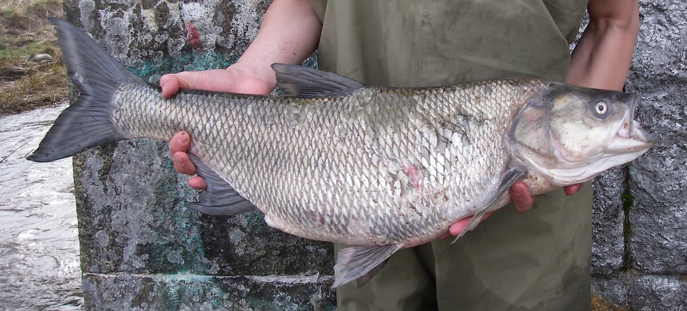

Biologia i rozpoznawanie
Wygląd i rozpoznawanie
Boleń (łac. Leuciscus aspius, dawniej Aspius aspius) ma wydłużone, bocznie spłaszczone, torpedowate ciało zbudowane do szybkiego pływania w nurcie. Grzbiet jest ciemny, szarozielony, boki srebrzyste, a płetwy szarawe z czerwonawym odcieniem u nasady. Charakterystyczna jest duża, głęboko wycięta paszcza sięgająca poza linię oka, z wystającą ku górze żuchwą zakończoną zgrubieniem pasującym do wcięcia w szczęce — boleń nie ma zębów w pysku, ofiary chwyta i miażdży zębami gardłowymi. Wyraźnie wcięta płetwa ogonowa zdradza sprintera. Mniejsze bolenie bywają mylone z jaziem i kleniem, ale jaź jest wygrzbiecony i ma czerwonawe płetwy, kleń ma cylindryczne ciało i zaokrągloną płetwę odbytową, natomiast boleń jest smuklejszy, ma ostro wykrojone płetwy i ten charakterystyczny, „drapieżny" pysk. Dorasta zwykle do 50–70 cm, wyjątkowo ponad 80 cm.
Środowisko i występowanie w Polsce
Boleń to typowa ryba dużych i średnich rzek nizinnych krainy brzany i leszcza. W Polsce licznie występuje w Wiśle, Odrze, Warcie, Bugu, Narwi, Sanie i ich większych dopływach, a także w niektórych zbiornikach zaporowych (m.in. Włocławskim, Zegrzyńskim, Jeziorsku) oraz w ujściowych odcinkach rzek i zalewach przymorskich. W jeziorach bez połączenia z rzekami spotykany jest rzadko. Kocha nurt: typowe stanowiska to główki i końcówki ostróg, warkocze wody za przeszkodami, granice prądu i spokojnej wody, bystrza poniżej jazów i elektrowni, ujścia dopływów oraz rozległe piaszczyste łachy, przy których nurt spycha drobnicę. W przeciwieństwie do większości drapieżników boleń żeruje głównie w górnych warstwach wody i w pełnym świetle dnia, co czyni go celem ataków możliwym do zlokalizowania wzrokiem — po słynnych „biciach" rozlegających się echem po rzece.
Biologia i tarło
Boleń dojrzewa płciowo w wieku 4–5 lat. Tarło odbywa wcześnie, zwykle od marca do końca kwietnia, przy temperaturze wody około 6–10°C, na płytkich, żwirowych bystrzach o silnym prądzie — często podejmując w tym celu wędrówki w górę rzeki. Ikra jest składana na kamienistym podłożu i pozostawiona bez opieki. Młode bolenie przez pierwsze dwa–trzy lata żywią się planktonem i bezkręgowcami, prowadząc życie typowej ryby karpiowatej, po czym przechodzą na drapieżnictwo — od tej pory ich podstawowym pokarmem są małe ryby stadne, przede wszystkim ukleje, ale też młode płocie, kiełbie i owady spadające na powierzchnię. Boleń rośnie umiarkowanie szybko i dożywa kilkunastu lat. Wczesny termin tarła jest powodem, dla którego jego okres ochronny zaczyna się i kończy wcześniej niż u sandacza czy suma.
Żerowanie wiosną i latem
Wczesną wiosną boleń koncentruje się na tarle i w tym okresie obowiązuje go ochrona; po jej zakończeniu, zwykle od maja, ryby intensywnie odbudowują kondycję, często jeszcze w głębszej wodzie i bliżej dna niż latem. Pełnia boleniowego sezonu to późna wiosna i lato: ukleje gromadzą się przy powierzchni, a bolenie polują na nie widowiskowymi atakami — ryba wpada w ławicę, ogłusza drobnicę uderzeniem ogona i zawraca po zdobycz. Latem najlepsze pory to świt i wczesny ranek oraz późne popołudnie, choć boleń, jako wzrokowiec, potrafi żerować przez cały słoneczny dzień, zwłaszcza na bystrzach. Wysoka, klarowna woda i niskie stany rzeki sprzyjają lokalizowaniu ryb, ale jednocześnie czynią je wyjątkowo płochliwymi — letni boleń widzi wędkarza na brzegu szybciej, niż wędkarz widzi bolenia.
Żerowanie jesienią i zimą
Jesienią powierzchniowe bicia stopniowo zanikają — wraz z chłodzeniem wody ukleje schodzą głębiej, a za nimi bolenie. Wrzesień potrafi być jeszcze bardzo dobry, w październiku i listopadzie ryby żerują niżej w toni i przy dnie, częściej w głębszych rynnach przy ostrogach i na stokach dołów. To czas cięższych przynęt i wolniejszego prowadzenia. Zimą boleń nie przestaje jeść całkowicie: w łagodne zimy, szczególnie poniżej zapór i zrzutów cieplejszej wody, łowi się go przez cały rok, ale brania są rzadkie, ostrożne i przychodzą niemal wyłącznie przy dnie, w spowolnionym nurcie. Charakterystyczne jest, że zimą bolenie potrafią stać w stadach w bardzo ograniczonych miejscach — znalezienie takiego skupiska to klucz, a reszta rzeki bywa wtedy martwa. Wraz z pierwszymi ociepleniami w lutym i marcu aktywność rośnie aż do okresu ochronnego.
Przepisy, metody i taktyka
Przepisy krajowe i zasady lokalne
Przepisy krajowe: Wody śródlądowe: wymiar 40 cm; § 7 nie ustanawia krajowego okresu ochronnego. Źródło: Dz.U. 2023 poz. 1373, § 6–7
Granica okresu ochronnego: jeżeli pierwszy lub ostatni dzień okresu przypada w dzień ustawowo wolny od pracy, okres skraca się o ten dzień (§ 7 ust. 2); wyjątkiem jest całoroczna ochrona jesiotra.
Przed połowem: sprawdź aktualny regulamin i zezwolenie dla konkretnej wody. Wymiar, okres, limit lub zakaz lokalny może być ostrzejszy; brak wartości krajowej nie oznacza zgody na zabranie ryby.
Metody i przynęty
Boleń to klasyczny cel spinningu. Latem królują przynęty prowadzone szybko pod powierzchnią: smukłe, ciężkie obrotówki z wydłużonym korpusem, wąskie wahadłówki, tzw. bolenki i pilkery rzeczne, woblery typu minnow o płytkiej pracy oraz powierzchniowe stickbaity i poppery, które bywają zabójcze podczas bić. Sprawdzają się też małe gumy na lekkich główkach i streamery podawane na zestawie spinningowym z bombardą — to rozwiązanie pozwala bardzo daleko posłać drobną, uklejopodobną przynętę. Jesienią i zimą paleta przesuwa się ku cięższym przynętom prowadzonym wolno i głęboko. Ponieważ boleń bierze z rozpędu i gwałtownie, zestaw powinien być wytrzymały, ale możliwie dyskretny: plecionka z długim przyponem fluorocarbonowym, bez stalki, która przy tym gatunku nie jest potrzebna. Dalekie rzuty to często połowa sukcesu, dlatego sprzęt boleniowy buduje się wokół wędek 2,7 m i dłuższych o szybkiej akcji.
Taktyka łowienia
Najważniejsza zasada boleniowa brzmi: nie daj się zobaczyć. Ryba żerująca pod powierzchnią w klarownej wodzie doskonale widzi sylwetkę na brzegu, więc podchodzimy nisko, wykorzystując zarośla i rzucamy z dystansu, najlepiej zanim staniemy na samej krawędzi wody. Klasyczna taktyka letnia to obławianie bić: rzut posyłamy za miejsce uderzenia i prowadzimy przynętę szybko przez rejon ataku — ale uwaga, ostentacyjne bicia bywają mylące, a duże bolenie często żerują dyskretnie obok, na granicy nurtu. Drugi sprawdzony schemat to systematyczne obrzucanie główek ostróg i warkoczy wody z prowadzeniem przynęty z nurtem i w poprzek niego, ze zmianami tempa, bo przyspieszenie często wyzwala atak. Boleń zwykle bierze raz: po nieudanym ataku lub schwytaniu ryby na danym stanowisku warto dać miejscu odpocząć i wrócić po godzinie. Hol jest dynamiczny — pierwsze odjazdy w nurcie potrafią zaskoczyć siłą, a pysk bolenia jest twardy, więc haki muszą być idealnie ostre.
Rekordy Polski — orientacyjnie
Rejestry wędkarskie notują w Polsce bolenie o długości około 80–90 cm i masie w okolicach 8–10 kg, przy czym jak zawsze przy danych rekordowych zalecamy ostrożność — klasyfikacje z różnych lat opierały się raz na wadze, raz na długości, a część historycznych wyników trudno dziś zweryfikować. W praktyce boleń powyżej 60 cm to bardzo dobra ryba, ponad 70 cm — wynik wyróżniający się w skali kraju. Największe osobniki pochodzą zwykle z dużych rzek, ze szczególnym wskazaniem na dolną Wisłę i Odrę oraz rejony podpiętrzeń, gdzie koncentruje się pokarm.
Wartość kulinarna i zasady C&R
Kulinarnie boleń jest oceniany przeciętnie: mięso ma smaczne, ale bardzo ościste, z licznymi rozwidlonymi ośćmi międzymięśniowymi typowymi dla karpiowatych, dlatego nadaje się głównie na kotlety mielone, ryby wędzone lub przetwory po odpowiednim nacięciu. Z tego powodu — oraz dlatego, że boleń rośnie wolno, a duże osobniki są cennymi tarlakami — zdecydowana większość spinningistów wypuszcza złowione bolenie. Gatunek dobrze znosi zabieg „złów i wypuść", pod warunkiem sprawnego odhaczenia: warto wymienić kotwice na pojedyncze haki bezzadziorowe, trzymać rybę mokrymi rękami lub odhaczać w wodzie i skrócić do minimum przebywanie ryby na powietrzu, szczególnie latem, gdy po szybkim, wyczerpującym holu boleń potrzebuje chwili podtrzymania pod prąd, zanim odpłynie o własnych siłach.
Ciekawostki
Słynne „bicie" bolenia to przemyślana technika łowiecka: ryba z rozpędu wpada w ławicę uklei, uderzeniem ogona i kadłuba ogłusza kilka sztuk, po czym zawraca i spokojnie zbiera ofiary — huk takiego ataku w cichy poranek słychać z kilkuset metrów. Boleń to także jedyna rodzima ryba karpiowata, która przeszła pełną drogę od planktonożercy do drapieżnika, choć nie wykształciła zębów w pysku — łuszczy i miażdży ofiary potężnymi zębami gardłowymi. W starszej literaturze wędkarskiej bywa nazywany rapem lub fatem; nazwa „rap" przetrwała na wschodzie Polski do dziś. Ciekawostką jest również to, że bolenie potrafią polować zespołowo, spychając ukleje w stronę płycizn lub pod sam brzeg, co wędkarze obserwują najczęściej późnym latem na dużych łachach Wisły.
FAQ — najczęstsze pytania
Dlaczego boleń bije, ale nie bierze mojej przynęty?
To najczęstsza boleniowa frustracja. Powody zwykle są trzy: przynęta jest za duża lub za wolno prowadzona w stosunku do uklei, którymi ryba akurat żeruje; wędkarz został zauważony i bolenie atakują naturalny pokarm, ignorując wszystko inne; albo rzuty lądują w samo miejsce bicia zamiast za nie. Pomaga zmniejszenie i przyspieszenie przynęty, dłuższy rzut oraz prowadzenie przez strefę ataku, a nie do niej.
Czy bolenia można łowić na żywca lub na muchę?
Boleń sporadycznie bierze na małego żywca czy martwą rybkę, ale to metoda mało selektywna i rzadko praktykowana; tam, gdzie żywiec jest dozwolony, i tak skuteczniejszy bywa spinning. Za to muszkarstwo z dużym streamerem imitującym uklejkę to znakomita, sportowa metoda boleniowa — wymaga dalekich rzutów i szybkiego ściągania, ale brania są wyjątkowo widowiskowe. Zawsze sprawdź, jakie metody dopuszcza regulamin danej wody.
Jaka pora dnia jest najlepsza na bolenia?
Statystycznie świt i pierwsze dwie godziny dnia oraz późne popołudnie, latem także środek słonecznego dnia na bystrzach — boleń to wzrokowiec i w przeciwieństwie do sandacza nie potrzebuje zmierzchu. Nocą łowi się go rzadko. Pamiętajmy jednak, że pora dnia nie gwarantuje brań: ważniejsze jest trafienie na żerujące stado i niespłoszenie go.
Czy przy boleniu potrzebny jest przypon stalowy?
Nie — boleń nie ma zębów zdolnych przeciąć żyłkę i stalka tylko zmniejsza liczbę brań tej wyjątkowo spostrzegawczej ryby. Wystarczy przypon z fluorocarbonu 0,25–0,35 mm. Wyjątkiem są łowiska, gdzie równolegle aktywnie polują szczupaki; wtedy trzeba samemu wyważyć ryzyko, a w miejscach typowo szczupakowych uczciwiej jest jednak założyć cienki materiał odporny na zęby.
Źródła i weryfikacja
Materiał ma charakter przeglądowy i edukacyjny. Podane wymiary, okresy ochronne i limity odpowiadają ogólnym zasadom PZW na dzień publikacji i mogą różnić się między okręgami oraz na wodach specjalnych — przed połowem zawsze zweryfikuj aktualne zezwolenie, regulamin właściwego okręgu i informacje na pzw.org.pl. FishPoint nie gwarantuje wyników połowu; opisane techniki i prawidłowości nie zapewniają brań w żadnych konkretnych warunkach.
Tożsamość biologiczna i źródła
Nazwa łacińska: Leuciscus aspius. Grupa atlasu: drapieżniki. Alias: asp.
Źródła: FishBase: Leuciscus aspiusGBIF: Leuciscus aspiusIUCN Red List: Leuciscus aspius. Dostęp: 2026-07-17. Zakres: tożsamość taksonomiczna i nazewnictwo oraz, gdy wskazano, ocena ochrony; bez potwierdzenia lokalnego występowania, stanu łowiska ani zasad połowu.
Porównanie taksonomiczne
Porównaj z kartą Ukleja pospolita. Obie karty prowadzą do osobnych rekordów źródłowych; porównanie nie jest kluczem oznaczania w terenie ani gwarancją wyniku połowu.